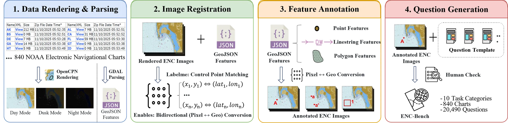
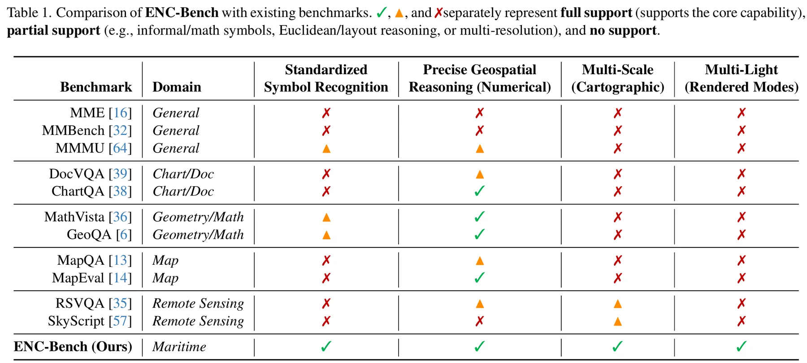
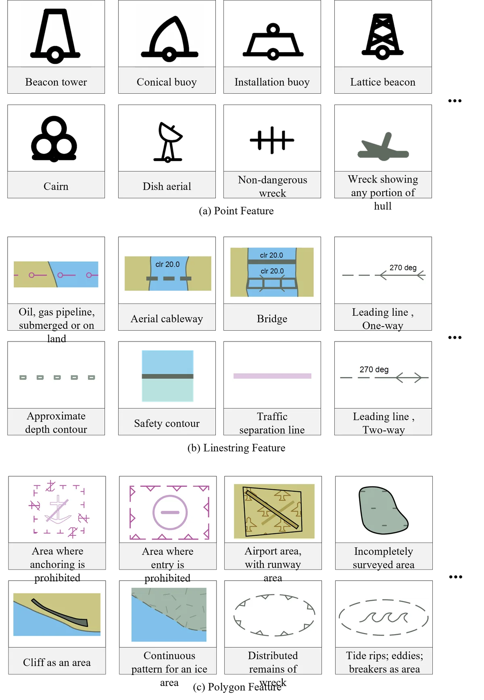
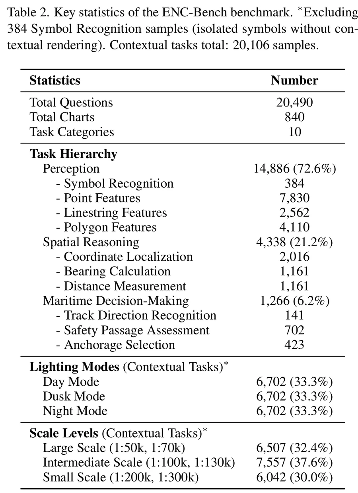
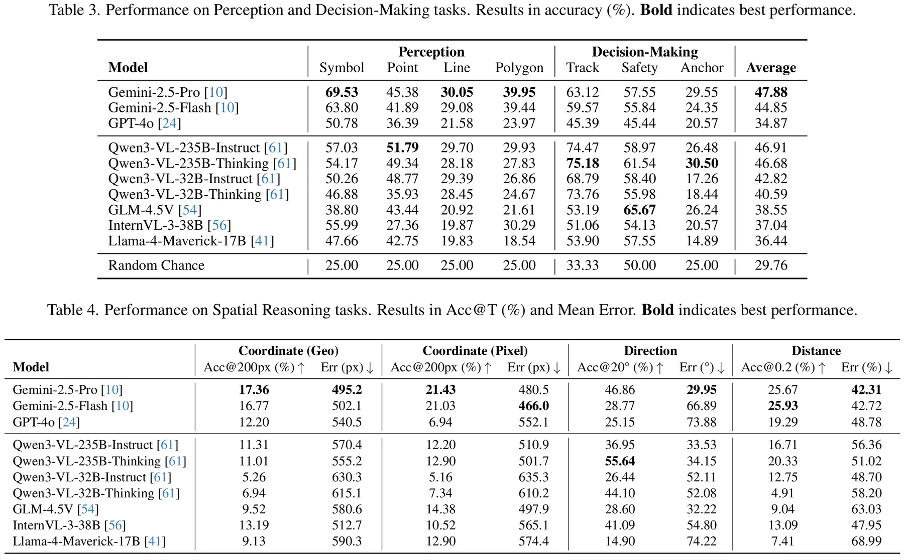
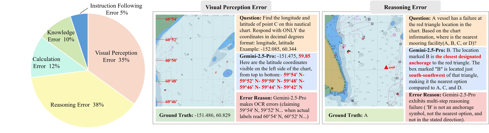

{kind=link}
{kind=link}
{kind=link}
Authors


CVPR 2026
Electronic Navigational Charts (ENCs) are the safety-critical backbone of modern maritime navigation, yet it remains unclear whether multimodal large language models (MLLMs) can reliably interpret them. Unlike natural images or conventional charts, ENCs encode regulations, bathymetry, and route constraints via standardized vector symbols, scale-dependent rendering, and precise geometric structure — requiring specialized maritime expertise for interpretation.
We introduce ENC-Bench, the first benchmark dedicated to professional ENC understanding. ENC-Bench contains 20,490 expert-validated samples from 840 authentic NOAA ENCs, organized into a three-level hierarchy: Perception (symbol and feature recognition), Spatial Reasoning (coordinate localization, bearing, distance), and Maritime Decision-Making (route legality, safety assessment, emergency planning under multiple constraints). All samples are generated from raw S-57 data through a calibrated vector-to-image pipeline with automated consistency checks and expert review.
We evaluate 10 state-of-the-art MLLMs such as GPT-4o, Gemini 2.5, Qwen3-VL, InternVL3, and GLM-4.5V under a unified zero-shot protocol. The best model achieves only 47.88% accuracy, with systematic challenges in symbolic grounding, spatial computation, multi-constraint reasoning, and robustness to lighting and scale variations. By establishing the first rigorous ENC benchmark, we open a new research frontier at the intersection of specialized symbolic reasoning and safety-critical AI.
Dataset Highlights
840 authentic NOAA charts are processed through a calibrated S-57 vector-to-image pipeline with automated consistency checks and expert validation.

Electronic Navigational Charts encode safety-critical maritime data — bathymetry, navigation aids, regulatory zones — unavailable in consumer mapping services. Drag the slider to compare.
ENC Lighting Modes
ENC-Bench covers three official lighting modes used in real maritime navigation systems.
Each sample in ENC-Bench is rendered in all three official IEC 61174 lighting modes (Day, Dusk, Night), totalling 6,830 samples per mode.
ENC-Bench is the first benchmark specifically designed for ENC understanding, significantly surpassing prior maritime and chart datasets in scale and task diversity.

20,490 samples spanning 10 task categories, 3 lighting modes, and 6 scale levels, covering 384 IHO S-57 standardized symbol types.


Zero-shot performance of 10 state-of-the-art MLLMs across all ENC-Bench task categories. The best model (Gemini-2.5-Pro) achieves only 47.88% overall accuracy, revealing significant room for improvement.


If you find ENC-Bench useful in your research, please cite our paper:
@inproceedings{cheng2026encbench,
title = {ENC-Bench: A Benchmark for Evaluating Multimodal Large
Language Models in Electronic Navigational Chart Understanding},
author = {Cheng, Ao and Li, Xingming and Ji, Xuanyu and He, Xixiang
and Sun, Qiyao and Qiu, Chunping and Huang, Runke and Hu, Qingyong},
booktitle = {Proceedings of the IEEE/CVF Conference on Computer Vision
and Pattern Recognition (CVPR)},
year = {2026}
}For questions about the paper, dataset, or benchmark, please reach out to the corresponding author.
We welcome questions about the ENC-Bench dataset, the benchmark evaluation framework, and potential collaboration opportunities in safety-critical AI and maritime intelligence. For early dataset access, please reach out directly.
Visitors Around the World